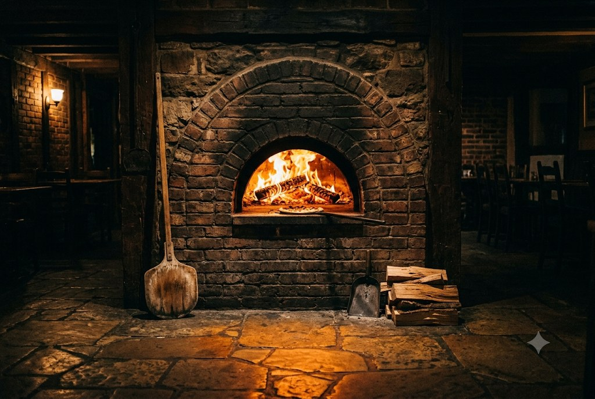
Sourdough bases, a very hot oven, and whatever looked good at the market this morning.
Changes when the market changes.
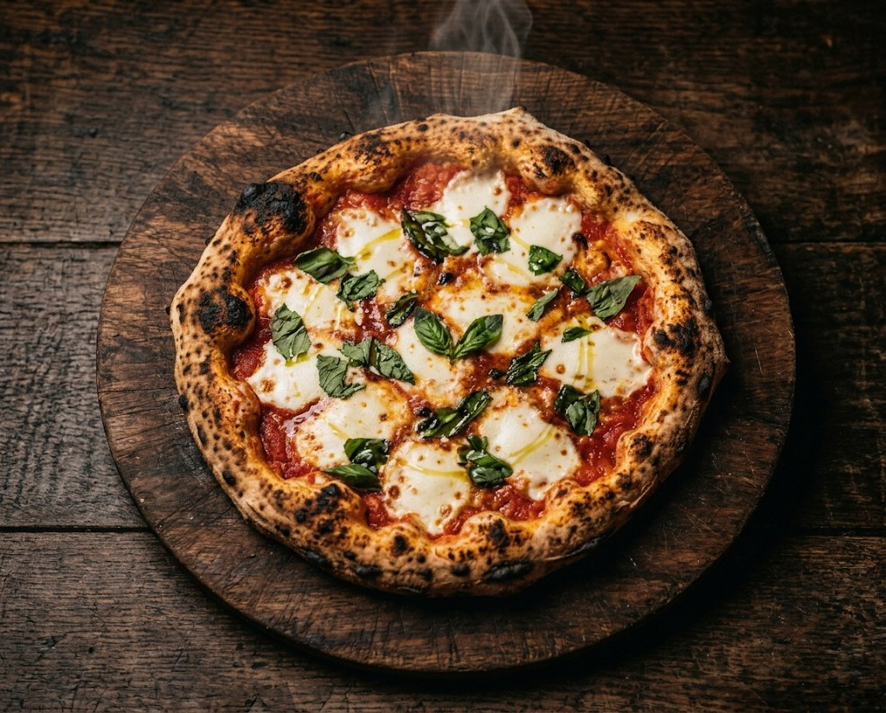
San Marzano, fior di latte, basil from the yard. The one we are judged on.
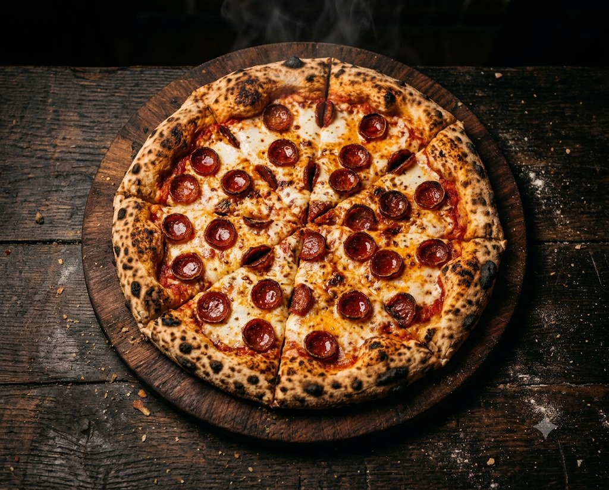
Cupping pepperoni, hot honey on the side if you want it. You will want it.
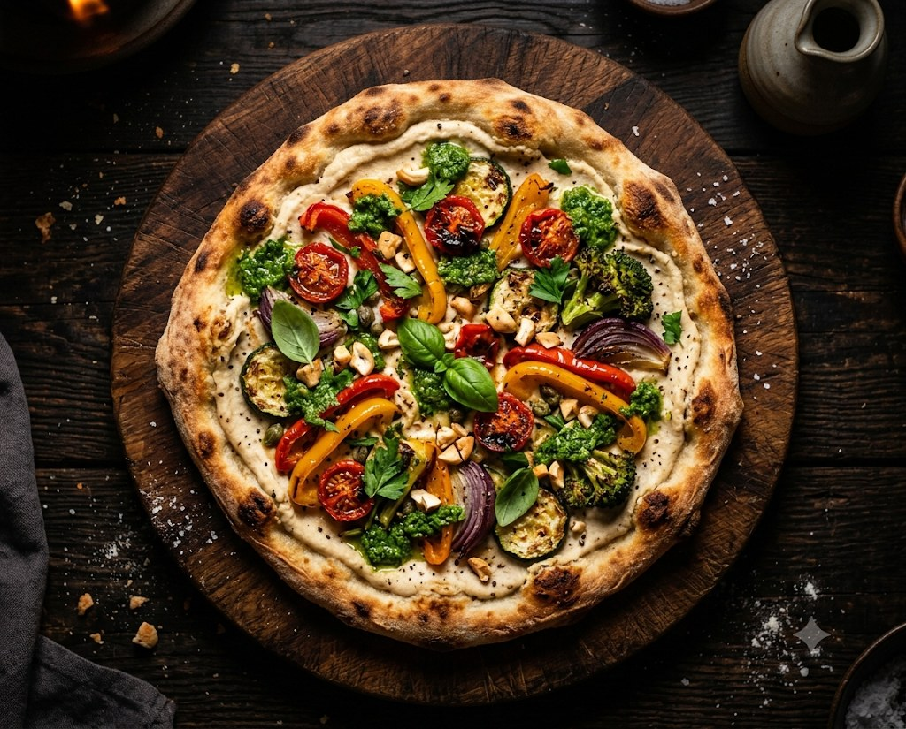
Cashew base, roasted zucchini, salsa verde. No dairy, no apologies.
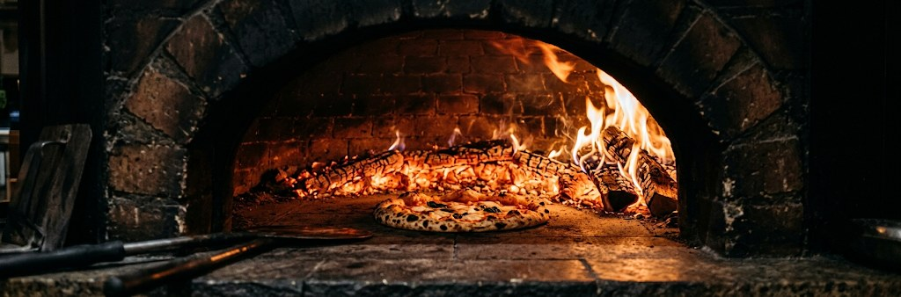
One oven. Ninety seconds. Whatever the market had that morning.Since 2011, 214 Mill Street
A real restaurant's photographs go here. These are drawings, standing in.
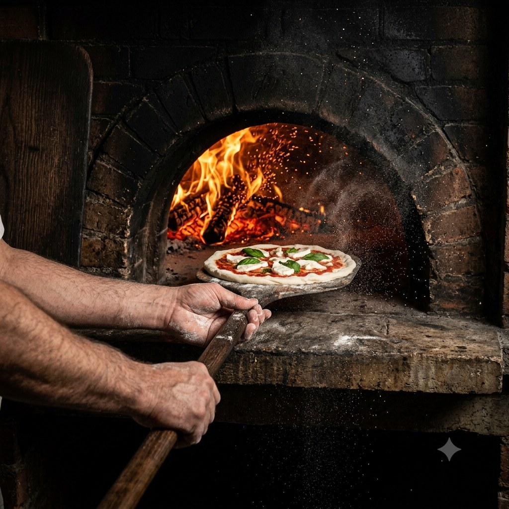
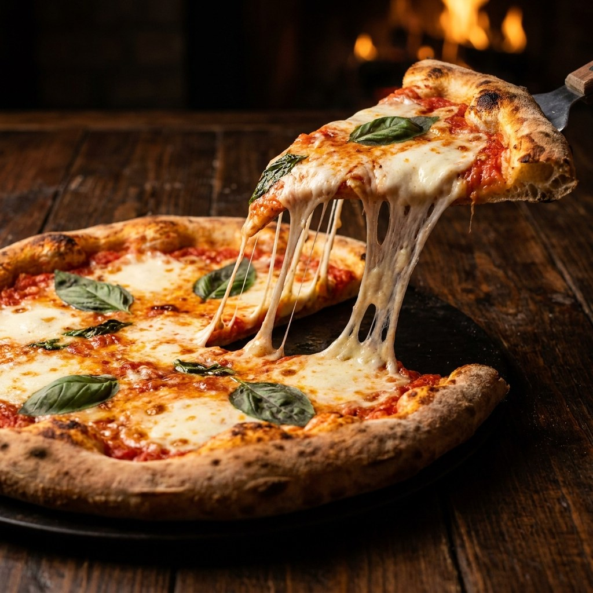
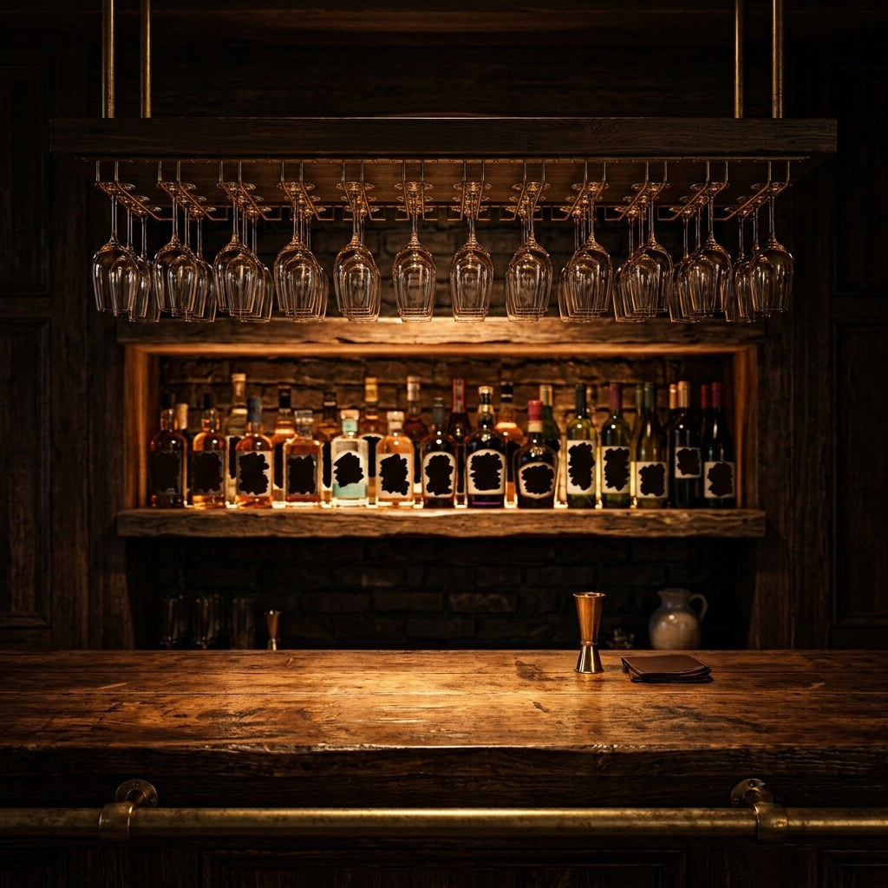
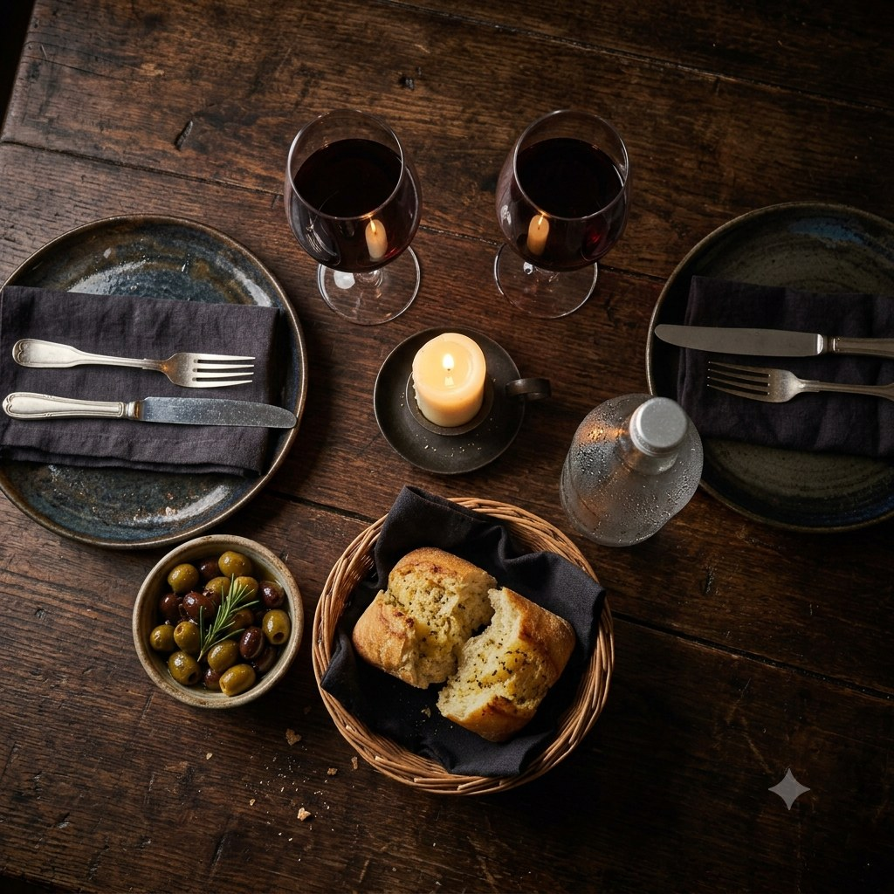
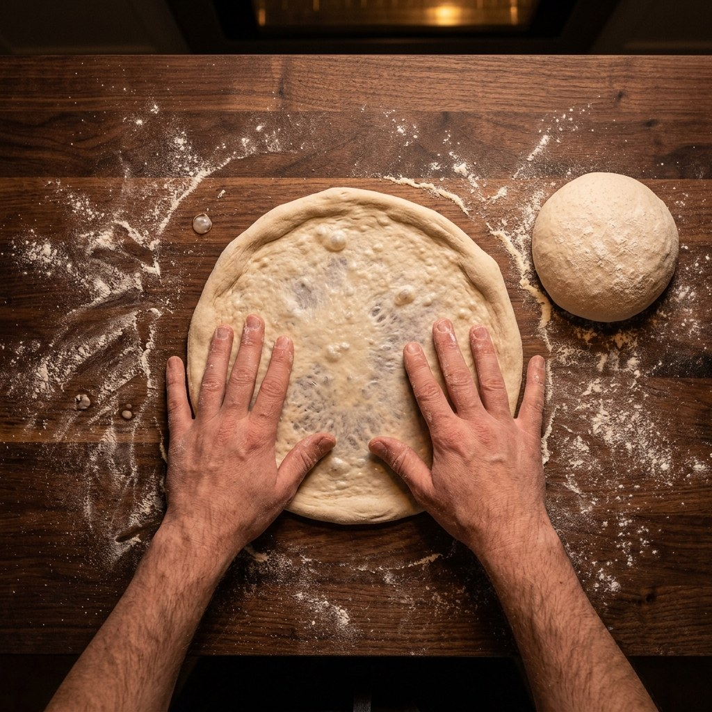
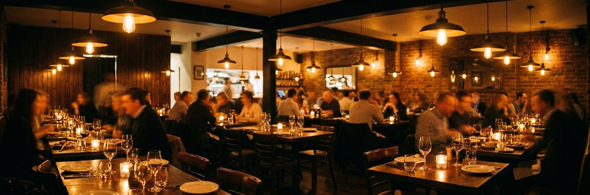
Dad put the oven in himself in 2011 and swore at it for two weeks. It has not moved since, and neither have we.
Everything comes out of that one oven. If it is busy, it is worth the wait, and we will tell you honestly how long it is.
214 Mill Street
Free street parking after 6pm, and a paid lot two minutes away on Bridge Street.
Bookings up to 8 online. For 9 or more give us a call on (555) 010-2288 so we can sort the seating properly.
The chat and the pickup ordering are in your $199, not sold on top of it. Switch either one off if you do not want it. Both do the same job: cut the wait between a hungry person and your kitchen.
What it does. A chat button sits on your website. It answers the questions you get over and over: your serving times, parking, vegan options, dogs, how to book. It only repeats the answers you wrote, and when it does not know something it says so and gives out your number.
Why it is worth having. Someone picking a restaurant at 9pm is standing on their phone, not making a call. Your page answers their question in your words, right then, while your staff stay on the floor. A page that answers nothing gives them nothing to act on.
What it does. The same button opens your menu. The diner taps what they want, then sends the finished order as a text to your restaurant's phone number, from their own phone. Their real number comes with it, and they pay when they pick up. No card machine to set up, no app to install, and nothing new for you to log into. It lands in the same place a customer calling you would.
Why it is worth having. It gets to 7:40 on a Friday, the phone rings, and every pair of hands is carrying plates. Nobody gets to it, and a caller who got no answer is usually not sitting there waiting for one. This gives that person a way in that does not need anybody free to pick up.
Both live in one button on your site, reading Order food or ask us. A diner taps it and can do either, so the ones who came to ask a question end up seeing the menu.
We are not going to put a number on this, because nobody honestly can. What we can do is name the moments where an order slips away, so you can hold them up against your own Friday night.
The honest ceiling. None of this gets a chance if nobody sees the button. It only gets one when the link is on your Google listing, your Instagram bio and your website. If about ten people a week look you up, that is about ten chances a week. This helps the people already looking for you. It does not go out and find new ones.
This is commission you would stop handing over. It is on top of the review work, not instead of it, and there is nothing extra to pay for it.
That is an estimate built from the numbers you just set. It is not a forecast and it is not a quote.
Every figure here is an estimate for comparison, not a quote. It only counts orders you move across, not new ones we are promising to bring you, because we are not promising that. Plenty of restaurants keep the apps for the reach and use this for the regulars who would rather deal with you directly. Commission rates are the published US merchant rates as of August 2026, and yours depend on the deal you signed.